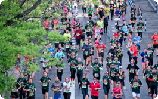

 RUNNING AND FUN 28 Funny Marathon Signs: The Best Running Race Sign Ideas We’ve Even Seen KATELYN TOCCI MARCH 19, 2024
RACE NEWS Karoline Bjerkeli Grøvdal Breaks Third Place Streak At United Airlines NYC Half Marathon AMY K. WHITSON, MD MARCH 19, 2024
RUNNING HOW-TO Running With Arthritis: You Can Keep Your Running Routine! JESSY CARVETH MARCH 19, 2024